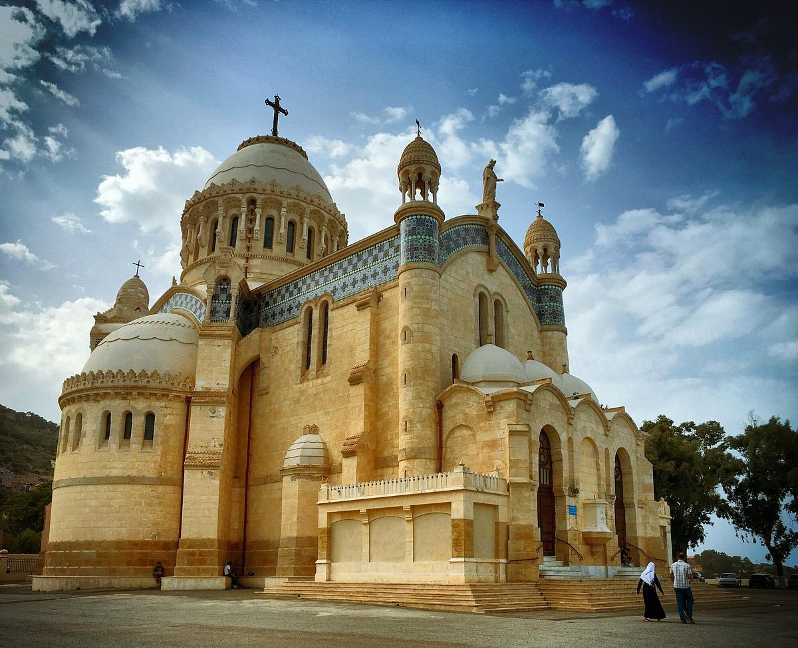

Alger est la capitale et la plus grande ville de l'Algérie, située sur la côte nord de la mer Méditerranée. Fondée par les Phéniciens il y a plus de 1 000 ans, Alger a une histoire riche et variée, avec des influences arabes, berbères, ottomanes et françaises.
La ville est connue pour sa magnifique architecture mauresque, ses rues étroites et sinueuses, ses marchés animés, ses plages pittoresques et son climat méditerranéen agréable. Alger abrite également de nombreux sites historiques et culturels, tels que la Casbah d'Alger (classée au patrimoine mondial de l'UNESCO), la Grande Poste, la basilique Notre-Dame d'Afrique, le Jardin d'Essai et le musée national des Beaux-Arts.
Alger regorge de monuments historiques et culturels fascinants qui reflètent son riche passé et sa diversité architecturale.Ces monuments et sites historiques contribuent à la richesse culturelle et patrimoniale d'Alger, en faisant une destination incontournable pour les amateurs d'histoire et de découverte. Voici quelques-uns des monuments les plus emblématiques d'Alger :
Dans l’un des plus beaux sites maritimes de la Méditerranée, surplombant les îlots où un comptoir carthaginois fut installé dès le IVe siècle av. J.-C., la Casbah constitue un type unique de médina , ou ville islamique. Lieu de mémoire autant que d’histoire, elle comprend des vestiges de la citadelle, des mosquées anciennes, des palais ottomans, ainsi qu’une structure urbaine traditionnelle associée à un grand sens de la communauté.
La Djamaa el Djazaïr est une grande mosquée située à Alger, en Algérie. Elle est également connue sous le nom de la Grande Mosquée d'Alger ou de la Mosquée El Djazaïr. Inaugurée en 2019, la mosquée Djamaa el Djazaïr est l'une des plus grandes mosquées d'Afrique et peut accueillir jusqu'à 120 000 fidèles. Elle est un symbole de l'architecture moderne et de la culture musulmane en Algérie.
La mosquée Djamaa el Djazaïr est dotée de plusieurs minarets, d'une grande salle de prière, de salles d'ablutions, de jardins et de fontaines. Elle est située sur les hauteurs d'Alger, offrant une vue panoramique sur la ville et la mer Méditerranée. Cette mosquée impressionnante est devenue un nouveau point de repère à Alger et un lieu de culte important pour la communauté musulmane.
La basilique Notre-Dame d'Afrique est une église catholique située à Alger, en Algérie. Construite au 19e siècle, la basilique est un magnifique exemple d'architecture néo-byzantine. Elle est perchée sur une colline surplombant la baie d'Alger, offrant une vue spectaculaire sur la ville et la mer Méditerranée
La basilique Notre-Dame d'Afrique a été construite en hommage à la Vierge Marie et est un lieu de culte important pour les fidèles catholiques en Algérie. Son architecture élégante, ses vitraux colorés et ses décorations intérieures en font un lieu de visite incontournable pour les amateurs d'art et d'histoire. La basilique est également un symbole de tolérance religieuse et de coexistence pacifique entre les différentes communautés religieuses en Algérie. Elle est ouverte aux visiteurs de toutes confessions et est un lieu de paix et de spiritualité dans la ville d'Alger.
Le Mémorial du Martyr, également connu sous le nom de Maqam Echahid, est un monument emblématique situé à Alger, en Algérie. Inauguré en 1982, ce monument imposant est dédié aux martyrs de la guerre d'indépendance de l'Algérie contre la colonisation française. Le Mémorial du Martyr se compose d'une structure en forme de trois immenses palmes soutenues par un pilier central, symbolisant la flamme de la liberté et la résistance du peuple algérien. Au sommet du monument se trouve une sculpture en forme d'étoile et de croissant, représentant le drapeau national.

Le site du Mémorial du Martyr offre également une vue panoramique sur la baie d'Alger et la ville environnante. C'est un lieu de mémoire et de recueillement, où les visiteurs peuvent rendre hommage aux sacrifices des martyrs pour l'indépendance de l'Algérie. Le Mémorial du Martyr est devenu un symbole important de la lutte pour la liberté et de la fierté nationale en Algérie.